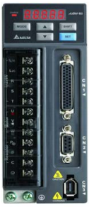

名称：台达伺服驱动器
运行时报警原因及报警内容
| 报警代码（运行时） | 报警名称 | 报警内容 |
| AL-001 | 过流 | 主回路电流值超越电机瞬间电流值1.5倍 |
| AL-002 | 过压 | 主回路电压值高于规格值时动作 |
| AL-003 | 欠压 | 主回路电压值低于规格值时动作 |
| AL-004 | 电机匹配异常 | 驱动器所对应的电机不对 |
| AL-005 | 回生异常 | 回生控制作动异常时动作 |
| AL-006 | 过负载 | 电机及驱动器过负荷时动作 |
| AL-007 | 过速度 | 电机控制速度超过正常速度 |
| AL-008 | 异常脉冲控制指令 | 脉冲指令输入频率超过硬件介面允许值 |
| AL-009 | 位置控制误差过大 | 位置控制误差量大于设定允许值 |
| AL-010 | 保留 | 保留 |
| AL-011 | 编码器异常 | 编码器产生脉冲信号异常 |
| AL-012 | 校正异常 | 执行电气校正时超越允许值 |
| AL-013 | 紧急停止 | 紧急按钮按下时 |
| AL-014 | 反向极限异常 | 逆向极限开关被按下时 |
| AL-015 | 正向极限异常 | 正向极限开关被按下时 |
| AL-016 | IGBT过热 | IGBT温度过高 |
| AL-017 | 参数储存器异常 | 存储器存取异常 |
| AL-018 | 检出器输出异常 | 检出器输出高于额定输出频率 |
| AL-019 | 串列通讯异常 | RS-232/485通讯异常 |
| AL-020 | 串列通讯超时 | RS-232/485超时异常 |
| AL-021 | 保留 | 保留 |
| AL-022 | 主回路电源缺相 | 主回路电源缺相 |
| AL-023 | 预先过负载警告 | 预先过负载警告 |
| AL-024 | 编码器初始磁场错误 | 编码器磁场位置UVW错误 |
| AL-025 | 编码器内部错误 | 编码器内部存储器异常 |
| AL-026 | 编码器内部资料可靠度错误 | 内部资料连续三次异常 |
| AL-030 | 电机碰撞错误 | 电机撞击硬件设备达到P1-57的扭矩 |
| AL-031 | 电机U.V.W接线错误 | 电机Powerline U.V.W接线错误 |
| AL-099 | DSP软件升级 | 软件版本升级 |